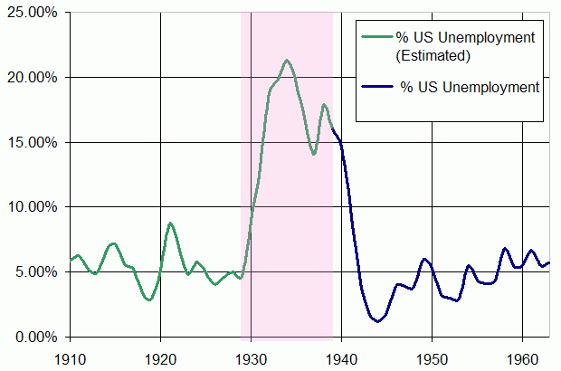
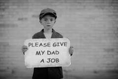

MASS UNEMPLOYMENT IN UNITED STATES
Many Americans were forced to buy things on credit then fell into debt, and the number of foreclosures and repossessions climbed steadily. The global adherence to the gold standard, which connected nations around the world in a fixed currency exchange, helped spread economic problems from the United States throughout the world, especially Europe.
When people lost their jobs they couldn't buy anything. Then the businesses don't make money and have to lay off thier employees, further worsening people's financial issues.

